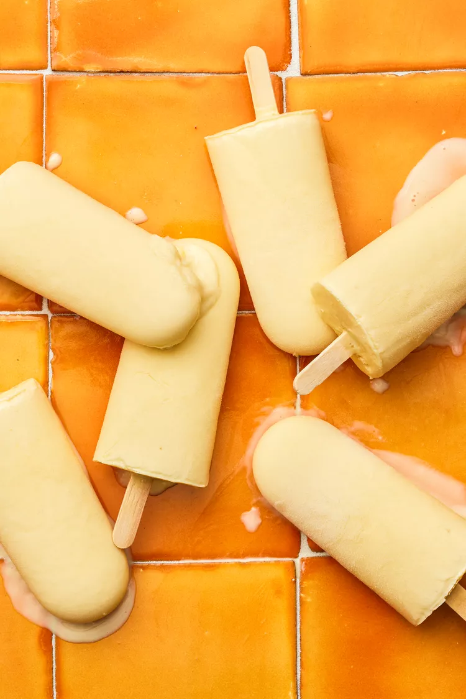

Orange Cream Popsicles

Orange Cream Popsicles
The 4-ingredient summer treat we long for.
Ingredients
For the meat sauce
- 2/3 cup (170g) orange juice concentrate, thawed
- 1/2 cup (100g) sugar
- 1 1/2 cups (340g) plain whole milk yogurt
- 1/2 cup milk
Method
-
Whisk the ingredients:
Whisk the orange concentrate and sugar in a large bowl (spouted, if you have one) that can hold 3 cups of liquid.
Whisk in yogurt and milk until smooth.
The mixture will be thick like a bottled smoothie or thick pulp-filled juice.
-
Assemble the popsicles:
If you don't have a spouted bowl, pour the ice pop mixture into a large glass measuring cup.
Pour the yogurt mixture up to the fill line of your popsicle mold or within 1/4 inch of the top of an alternative container (such as a small paper cup).
Add the sticks to the popsicle mold and move to the freezer.
If using an alternative container, cover with plastic wrap and cut a slit in the center and slip the stick through the slit.
This will keep the stick in place as well as keep the popsicle covered.
-
Freeze:
Transfer the popsicles to the freezer.
Straighten the sticks for alternative containers (if using) after moving to the freezer and freeze undisturbed for 8 hours.
-
Unmold and serve:
Once frozen, follow the manufacturer's instructions for removing the popsicles from the mold.
I found that setting the popsicles in a cup filled with warm water for 1 minute made removal a breeze.
-
Storage:
Keep leftover popsicles in an airtight freezer bag for up to 2 months.
Reference